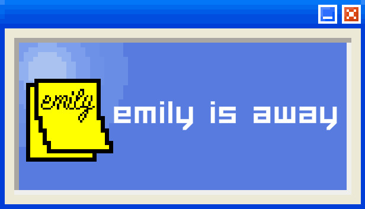
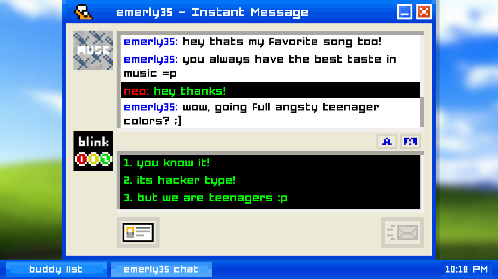

Since we first didn't know where to start with the story, we looked for inspiration. Our main inspiration for this game is another 2d-chatroom game called "Emily is Away".

Emily Is Away is an indie visual novel by game developer Kyle Seeley, released for free in November 2015. Set in the early-to-mid 2000s, Emily Is Away tells the story of the protagonist's relationship with a girl, Emily, over the course of five years, from the senior year of high school to the senior year of college.
Similar to our game, the protagonist (the player) also has a friendly relationship with the character on the other line of the chatroom. There's a development in the relationship between them, which the player can influence how they want to.

We wanted our story to be different and more relatable though. Since we're students we also wanted our character Alex to be one, so there's already a deeper connection to the character from the start of the game. Alex should be a special character, so that the player remembers and gets more interested in his personality.
The story should be emotional. Our first thought was to make a story about friendship, since we could either make it sad or happy. After that we realized that there's not a real purpose or important message to our game, so we tried to find a new idea to include to the story. We came up with the topic depressions after some thinking time, but since the subject is often overused also in games, we decided to specialize on the signs of depression, since it's an important matter and also in connection with friendship and emotions.